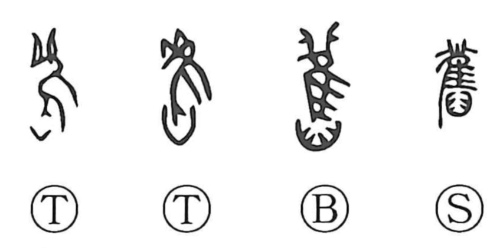

旧

Kun: furui, moto | On: kyuu
old ・ former
Explanation
The character 旧 goes back to the older form 舊, a compound of 萑, which depicts an eared owl, and 臼, understood here not as a mortar but as a bird-catching device. It evokes the act of ensnaring the owl by its legs so it cannot fly—a task made easier at midday, when such owls see poorly. From the image of a creature held fast and remaining in place grew the sense of a long interval passing, and from that, the meanings “old” and “former.” In this way 旧 stands close in sense to 久, “a long time.”